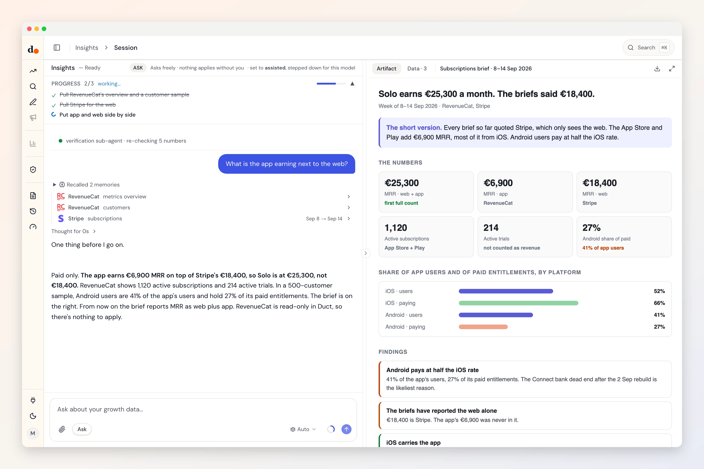

RevenueCat, the app's half of the revenue.
Stripe sees the web. RevenueCat sees the App Store and Google Play. Duct reads both so MRR is one number, and checks app ad installs against the subscriptions they turned into.
- Secret key (V2)
- Reads three datasets
- Read-only
- Checked Sep 29, 2026

Ask
Questions you can just ask
What is our MRR across web and app together?

 RevenueCat + Stripe
RevenueCat + StripeDid the Apple Search Ads installs start trials?
 RevenueCat + Apple Search Ads
RevenueCat + Apple Search AdsDo Android users pay like iOS users?
RevenueCatHow many trials are active right now?
RevenueCat
Access
What it reads. What it can change.
What it reads
- Overview metricsactive trialsactive subscriptionsMRRrevenuenew customersactive users
- Apps, products, entitlements and offeringsnamestoreidentifier
- Customers, a sample of 500first seenlast seencountryplatformactive entitlements
RevenueCat API v2 · checked against the fetch code Sep 29, 2026 · read the source
What it can change
Nothing.
Duct has no RevenueCat change operation, so it cannot edit anything in RevenueCat. It can still recommend a change for you to make there.
Knowledge
What Duct already knows about RevenueCat
- 01
RevenueCat is the app's money truth.
Installs and in-app events are signals. RevenueCat sees refunds, billing retries and cancellations, so Duct checks app ad conversions against it, never the reverse.
- 02
An SDK key can't read the API.
Keys starting appl_ or goog_ are for the app. Reading needs a secret V2 key, and Duct tells you if you pasted the wrong kind.
- 03
Customer IDs are hashed.
Duct keeps a SHA-256 of each app user ID: enough to join one pull to the next, useless for identifying a person.
- 04
Metrics are rate-limited hard.
RevenueCat's metrics API allows 25 requests a minute. Duct paces its reads rather than finding the limit by failing.
Better together
What RevenueCat answers with a partner
Setup
Connect RevenueCat in three steps
- 1
In RevenueCat, open Project settings, then API keys, and create a secret API key (V2).
- 2
Give it read access to project configuration, customer information and charts metrics.
- 3
In Duct, open Connections, choose RevenueCat and paste the key.
Read-only: a key with read scopes cannot change a product or a subscription, and Duct has no RevenueCat change operation.
Keys and tokens are stored encrypted by Duct's hosted API, never in your browser, and you can remove a connection at any time. A self-host build keeps them on your own machine.
FAQ
RevenueCat, answered
Can Duct change products, offerings or subscriptions?
No. Duct has no RevenueCat change operation. It reads metrics, configuration and a customer sample.
Which customer data does Duct keep?
From a sample of 500 customers: when each was first and last seen, their country and platform, and their active entitlements, with the user ID hashed.
Why a secret key and not the one in my app?
The keys in your app are public SDK keys, and they cannot read RevenueCat's REST API. A secret V2 key with read scopes can.
Is it free?
Yes. Duct is free with your own model keys or the ChatGPT plan you already have, and the core is MIT licensed. A paid plan later bundles the models; nothing open today moves behind it. What will cost money.